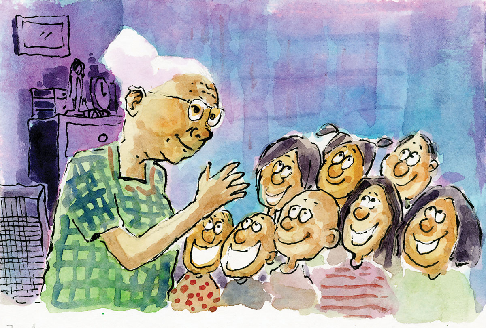
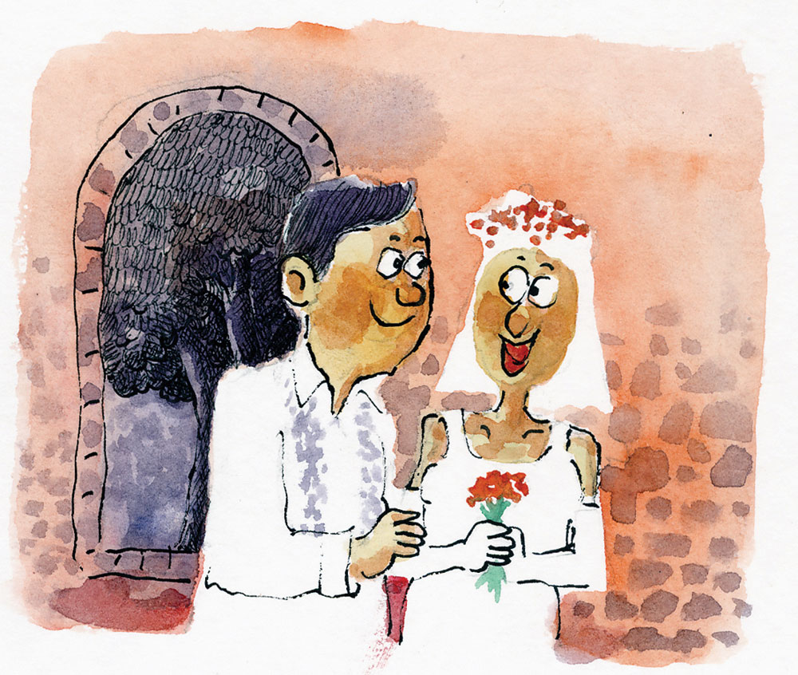

Si Kan, ang Agta nga Dangas og Agtang
Nahimuot si Lola Sinuna nga mipaliraw sa iyang panan-aw ngadto sa iyang mga bisita ning gabhiona. Matinahuron ug buotan kaayo sila si Cesar, Meo, Gario, Celina, Merta ug Pina nga miamen kaniya. Unya, ang lima ka mga bata malipayon kaayo nga nangyaka sa hawanan sa karaang balay – sa bugnaw nga salog nga kawayan. Mipahiluna usab paglingkod si Lola Sinuna sa lantay nga kawayan, simpig sa bentana ug miatubang sa madasigong kabataan. Ang kahayag sa takdol nga bulan, nanglusot sa bentana ug midan-ag sa panagway sa kabataan diha sa hawanan.
Nagkadungan pagsulti ang unom ka mga bata.
“Lola, ania na sab mi kay maminaw sa makalingaw mong asoy ning gabhiona!”
“Hay, kining mga bataa! Human na ba kamog panihapon?”
“Human na, La!” Mihugyaw pagsinggit ang kabataan.
Mipahiyom si Lola Sinuna nga nagyanguyango. Gitutokan na usab niya ang unom ka mga bata. Ganahan silang maminaw sa kasugiran nga karaan ug nahimo na niyang suki matag gabii, ilabi na gayud kon takdol ang bulan.
“Buyno, paminaw kamo! Kasugiran sa usa ka agta ang akong iasoy kaninyong tanan!”
Mihugyaw sa kalipay sila si Cesar, Meo, Gario, Celina, Merta ug Pina.
“Yahooooo! Agta! Sige, maminaw mi, La!”
Ug misugod sa pag-asoy si Lola Sinuna.
Niadtong unang panahon, panahon sa mga karaang tawo kanus-a hinay pa ang pagdis-og sa sibilisasyon, ang baryo Caduawan sa lungsod sa Tabogon nga nahisakop sa amihanang dapit sa probinsiya sa Sugbo, maoy nabantog sa pagkatabunok og yuta. Ang mga lumolupyo ning maong baryo nabuhi sa panguma. Gilibutan usab kini sa kakahuyan nga maoy gihimong pinuy-anan sa nagkadaiyang kalanggaman.
Sa nabungtoran nga dapit sa Caduawan nag-inusarang nagtuybo ang labing dako nga punoan sa kahoy nga muwabog, nga dili magakos og napulo ka tawo. Karaan ug lubas na usab ang maong dakong punoan sa kahoy nga, matod sa katigulangang lumolupyo sa baryo, maoy pinuy-anan sa usa ka agta nga nahigugma sa usa ka dalaga.
Si Kan ang ngalan sa maong agta nga magpakita sa mga lumolupyo sa Caduawan panahon sa takdol nga bulan. Ug kay sinaw ug dangas man ang agtang sa maong agta, gianggaan siya sa baryo og “Si Kan, ang agta mga dangas og agtang.”
Magkaguliyang pagsinggit ang katawhan sa higayon nga magpakita ang agta, matag takdol sa bulan, nga motupong sa gitas-on sa punoan sa muwabog.
“Anaa na usab si Kan, ang agta nga dangas og agtang!”
Si Lumeng nga anak og usa ka mag-uuma sa baryo, mao ang dalagang gihigugma sa agta, apan gikatakda na nga kaslon sa iyang hinigugmang si Penyong, nga usa usab ka kugihang mag-uuma. Apan ang agta padayon nga nangulitawo ug nagpakiluoy sa dalaga.
“Lumeng, talagsaon ang akong gugma kanimo!” Nagpakiluoy si Kan sa dihang nagpakita na usab kini kang Lumeng usa ka higayon nga takdol ang buwan. Gipatungtong sa agta ang dalaga diha sa iyang palad. Nagtindog ang agta nga mitupong sa dakong punoan sa muwabog.
“Gikasubo ko, Kan! Kaslunon na ko sa akong hinigugmang si Penyong. Gawas pa, dili parehas ang atong gidak-on ug dili managsama ang kalibutan nga atong gipuy-an!”
Sa unang higayon, mihilak ang agta nga hugot mitutok kang Lumeng nga nagtindog diha sa iyang palad.
“Timan-i, Lumeng! Dautang tilimad-on mahitabo kon mapakyas ang akong gugma kanimo ug kon dili ko ikaw maangkon!”
“U…unsay buot mong ipasabot, Kan?”
“Matumba ug maluka kining dakong punoan sa muwabog, Lumeng! Mao kini ang timailhan sa akong kamatayon ug dili na ko nimo makita, hangtod sa kahangturan!”
Sa dihang nagpakasal gayud si Lumeng kang Penyong maoy nasinati sa mga lumolupyo sa Caduawan nga mikalit lang og lipak ang kalangitan, gisundan sa kilat ug dugdog nianang pagkagabii. May alimpulos. Pagkaugma maoy nasaksihan sa mga molupyo sa baryo ang pagkapukan sa dakong punoan sa muwabog. Natumba ug naluka kini.
Sukad maluka ang dakong punoan sa kahoyng muwabog, wala na gayud mopatim-aw ang agta nga dangas og agtang. Gitinuod gayud ni Kan ang iyang gisulti ngadto kang Lumeng nga magpakamatay tungod sa iyang kapakyas pag-angkon sa gugma sa dalaga.
Adunay makapahibulong nga talan-awon nga namatikdan ang mga molupyo sa Caduawan didto sa dapit nga napukanan ug natumbahan sa kahoyng muwabog. Inanay nga mitubo ang yuta. Mitubo ug mitubo hangtod nahimong bungtod.
Ug paglabay sa daghang katuigan naporma ug nahimong dakong bungtod ang dapit. Usa ka mahabog nga bungtod ang mitubo ug nagbuntaog sa baryo Caduawan nga, matod pa sa taga Negros, maoy bugtong bungtod nga klarong makita ang kahabog niini didto sa ilang dapit. Ug tungod ni Kan, ang agta nga dangas og agtang, ginganlan ang maong mahabog nga bungtod og Kandangas.
Miginhawa og lawom si Lola Sinuna. Mihulma ang yakmo niyang suwang human sa iyang asoy ngadto sa kabataan nga nagpitaw ang mga mata sa katagbaw.
“Sakay sa usa ka bus pasaheroan, gikan sa siyudad sa Sugbo, paingon sa siyudad sa Bogo ug vice versa, atong maagian ug maaninaw ang mahabog nga bungtod sa Kandangas sa Caduawan!”
Nagyagubyob ang kabataan sa gidangatan sa agta.
“Namatay ang agta, Lola! Apan may simbulo siyang gibilin sa Caduawan, ang habog nga bungtod sa Kandangas!”
Ug gitapos ni Lola Sinuna ang iyang asoy sa kabataan sa pag-ingon.
Sa pagkakaron, nahimo na nga usa ka sityo ang Kandangas sa baryo Caduawan, nga nagsimbulo sa nag-inusara ug mahabog nga bungtod nga nag-umbaw sa kasikbit nga mga baryo sa Ilihan ug Libjo sa lungsod sa Tabogon. Kini nag-umbaw sab sa kasikbit nga mga baryo sa Sab-a, Calambua, Libaong ug Canagahan sa lungsod sa San Remegio.